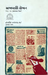

પત્રકારત્વ
અખબારી લેખન (૧૭૭૯) |
||
|  |
પત્રકારત્વ એક ‘પ્રોફેશન’ છે એ વિચારને લક્ષમાં રાખીને આ ગ્રંથ લખાયો છે. આમાં પત્રકારે કયા વિષય પર લખવું જોઈએ, લેખનું આયોજન, એની ભાષા તથા એના આંતરિક બંધારણ જેવી બાબતો અંગે અભ્યાસીને કેન્દ્રમાં રખીને ચર્ચા કરવામાં આવી છે. દર્શાવી છે. ગુજરાતી પત્રકારત્વના ક્ષેત્રમાં આ પુસ્તક પત્રકારત્વના વિદ્યાર્થીઓ અને અભ્યાસીઓને માટે માર્ગદર્શક બની રહ્યું છે. |
|
ગુજરાતી સાહિત્યની અને જૈન સમાજની સેવા કરવાની ‘જયભિખ્ખુ’ની પરંપરા કુમારપાળે સુંદર રીતે જાળવી છે. ગુજરાત સમાચારની ‘ઈંટ અને ઇમારત’ કૉલમ આજે પણ વાંચકોની એટલી જ ચાહના મેળવે છે. પિતા અને પુત્ર બંને મળીને કોઈ અખબારની આ પ્રકારની કૉલમ આટલો લાંબો સમય ચલાવી હોય તેવું મારા ખ્યાલમાં નથી. ‘ગુજરાત સમાચાર’ના લેખક ‘પદ્મશ્રી’નું માન મળ્યું હોય તેવી આ પહેલી ઘટના છે. |